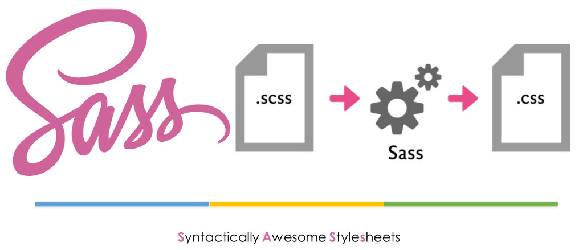
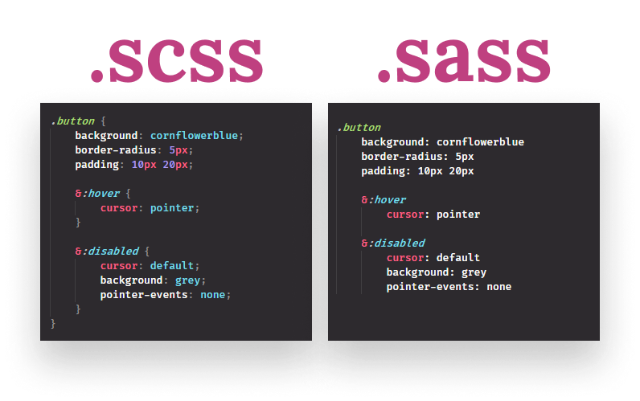

Препроцессор SASS. Изучаем SASS для быстрой верстки. CSS компилятор для быстрой верстки шаблонов и макетов сайта.
Что такое препроцессор SASS и чем отличается SASS от SCSS?
SASS – это препроцессор CSS, основной задачей которого является расширение возможностей написания CSS кода, препроцессор SASS в разы ускоряет написание кода CSS и в разы облегчает его обслуживание. SASS представляет собой язык, похожий на язык программирования, который облегчает и ускоряет разработку CSS. SASS является компилируемым язык и в чистом виде браузер его не обрабатывает. Когда говорят о препроцессоре SASS, часто упоминают SCSS.
Давайте сразу определимся, чем отличается SASS от SCSS и в чем между ними разница. На самом деле разница между SASS и SCSS только в синтаксисе: разные правила написания кода, но функционал SASS и SCSS полностью одинаков.
Раз CSS препроцессор SASS – это компилируемый язык, то у этого языка должен быть компилятор, который бы преобразовывал код, написанный на SASS или SCSS в чистый CSS код, компилятор SASS и SCSS написан на языке Ruby, поэтому всем владельцам платформ Windows прежде чем использовать SASS или SCSS рекомендуется установить Ruby.
Обратите внимание: SASS и SCSS генерируют чистый, кросс-браузерный и валидный код, но, чтобы CSS код был чистым: 1) вы должны знать CSS; 2) вы должны знать принцип работы SASS или SCSS, в противном случае на компилятор нечего пенять.
В препроцессоре SASS и SCSS реализовано очень много фишек, которые в разы ускорят разработку кода CSS. В процессе изучения SASS мы будем параллельно изучать и SCSS: все что я буду писать для SASS, будет работать так же и на SCSS, примеры будут как для SASS, так и для SCSS.

Функционал SASS, расширяем возможности CSS с SASS и SCSS
Давайте поговорим о функционале SASS и SCSS, заодно и поймем: почему SASS и SCSS в разы ускоряет разработку HTML макетов и облегчает обслуживание сайтов. Сам по себе процесс CSS верстки сайта довольно интересное занятие, но иногда оно превращается в нудное и кропотливое, тогда вам на помощь приходит CSS препроцессор SASS и SCSS, который сделает вашу работу не такой нудной. Сейчас вы убедитесь в том, что SASS и SCSS действительно вам помогут, я просто перечислю функции этого CSS препроцессора.
- Препроцессор SASS и SCSS поддерживает вложенные правила, которые делают CSS код намного более читабельным, логичным и естественным, язык HTML поддерживает строгую иерархию, в CSS такой иерархии нет. А вот в SASS и SCSS можно сделать написание правил иерархичным, так же вложенные правила SASS позволяют избежать повторов в коде.
- Препроцессор SASS и SCSS позволяют указывать родительские селекторы. В HTML элементы страницы могут быть вложены друг в друга и внешний элемент – родительский, вложенный элемент – дочерний. В SASS и SCSS это можно отразить.
- Препроцессор SASS и SCSS поддерживает вложенные свойства. В CSS много свойств, начинающихся с font, в SASS и SCSS вы можете откинуть слово font и писать: size, weight и другие.
- Препроцессор SASS и SCSS поддерживает шаблонные селекторы, благодаря которым все стили, заданные одному селектору, можно задать другому, просто написав одну строчку кода.
- В SASS и SCSS есть комментарии, но они есть и в CSS.
- SASS и SCSS используют язык SassScript, у которого есть интерактивная оболочка.
- Препроцессор SASS и SCSS поддерживает работу с переменными, чтобы можно было изменять повторяющиеся значения в одном месте, а не пролистывать весь CSS файл.
- SASS и SCSS могут работать с различными типами данных: строки, списки, ассоциативные массивы и даже цвет – это тип данных в SASS.
- SASS и SCSS дают возможность производить операции, которых нет в CSS: можно производить математические операции, операции с цветами, операции с логическими значениями и операции со списками.
- В SASS и SCSS можно задать порядок действия при операциях круглыми скобками.
- Препроцессор SASS и SCSS имеет набор встроенных функций, которым можно передавать параметры.
- Переменные в SASS и SCSS можно использовать при именовании селекторов и при именовании CSS свойств.
- Переменные в SASS и SCSS могут иметь значения по умолчанию, что очень часто позволяет избегать ошибок при написании кода.
- SASS и SCSS поддерживают все CSS директивы.
- В SASS и SCSS есть логические конструкции, которые называются логические директивы: if, for, each, while.
- Препроцессор SASS и SCSS поддерживает миксины. Миксины в SASS и SCSS позволяют повторно использовать стили.
- Препроцессор SASS и SCSS поддерживает пользовательские функции, которые вы можете самостоятельно написать, а потом использовать сколько вам угодно.
- На выходе компилятора/интерпретатора SASS/SCSS можно получать CSS файлы, которые оформлены по-разному (разница в пробельных символах).
- Препроцессор SASS кэширует свои файлы, то есть он сохраняет в виде CSS самые часто используемые куски кода и не компилирует их повторно.
Я сделал лишь краткий, но полный обзор возможностей препроцессора SASS и SCSS. Надеюсь, что он вам помог решить: стоит или нет тратить время на изучение данного CSS препроцессора, но в одном вы можете быть уверены точно: CSS разработка с SASS в разы быстрее, но только в том случае, когда вы уже знаете CSS и изучите SASS. На первых парах использование SASS может внести некоторые затруднения, которые в дальнейшем окупятся.
Недостатки и преимущества SASS и SCSS
Давайте рассмотрим недостатки и преимущества препроцессора SASS и SCSS. Начнем мы, конечно же, с преимуществ препроцессора SASS и SCSS:
- SASS и SCSS позволяют разрабатывать чистый CSS код и при этом использовать некоторые конструкции из программирования.
- Препроцессор SASS и SCSS позволяет в разы ускорить написание CSS кода.
- SASS и SCSS поддерживают все языковые конструкции CSS всех версий.
- Вы можете использовать SASS и SCSS с любым известным CSS фреймворком.
- SASS и SCSS используют вложения и разные полезные функции.
- У SASS и SCSS очень много преимуществ, но ощутите вы их только тогда, когда в полной мере изучите данный препроцессор.
Препроцессор SASS и SCSS имеет и недостатки, давайте на них посмотрим:
- Если вы плохо знаете CSS, то SASS и SCSS вам ничем не помогут, хотя можно совместить полезное с полезным.
- На изучение всех функций SASS и SCSS потребуется довольно большое количество времени.
- Если к файлу с расширением .sass или .scss подключится несколько разработчиков и начнут править его одновременно, то у компилятора/интерпретатора могут возникнуть проблемы.
- А еще инспектор HTML элементов, встроенный в браузер, не всегда сможет вам помочь, если вы используете SASS или SCSS.
Мы познакомились с SASS и SCSS, узнали в чем разница между SASS и SCSS, разобрались с недостатками и преимуществами SASS и SCSS, но главное, сделали для себя вывод, что SASS и SCSS действительно помогают ускорить работу по верстке HTML.